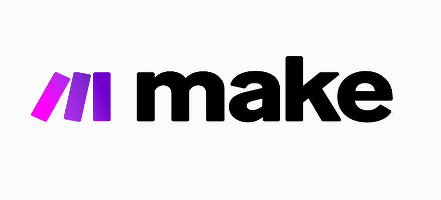

Hi there!👋
I'm Faith WambuiI'm a data professional working at the intersection of analytics, governance, and sustainability. I help organizations not just understand their data - but use it responsibly, strategically, and for lasting impact.
Scroll to explore
Featured Projects
A selection of work I'm proud of.


DPro Template Library
A web platform that centralizes PM4NGOs' DPro templates, making project management and MEAL resources easier to find and use for NGO practitioners.
MEAL
Project Management
Program Management
Work Experience
Where I've worked and what I've built.
Dec 2023 – Jul 2025
Business Intelligence Consultant
Kilimo Bora AgroTech Solutions
Kiambu, Kenya
Apr 2023
Impact Rater
Impaakt
Freelance
Oct 2021 – Dec 2022
Project Coordinator
Firefly Construction Limited
Nairobi, Kenya
Nov 2020 – Sep 2021
Engineering Associate
The Sanergy Collaborative
Machakos, Kenya
Oct 2020 – Nov 2020
YALI East Africa Fellow
YALI Regional Leadership Center East Africa
Nairobi, Kenya
Jul 2020 – Nov 2020
Process and Quality Fellow
The Sanergy Collaborative
Nairobi, Kenya
Feb 2017 – Mar 2020
Project Control Engineer
Snow-In Engineering Limited
Nairobi, Kenya
Aug 2016 – Jan 2017
Project Assistant
Africa Waste and Environment Management Centre
Nairobi, Kenya
Jan 2015 – Apr 2015
Engineering Trainee
DEVKI Steel Mills
Kiambu, Kenya
Mar 2013 – Jan 2020
Co-Founder & COO
Fanitah Fashions
Nairobi, Kenya
Jan 2013 – Apr 2013
Engineering Trainee
Brookside - Gicheha Farm
Kiambu, Kenya
Aug 2009
Enumerator
Kenya National Bureau of Statistics
Nairobi, Kenya
Tools & Technologies
My technical toolkit.

Connect with Me
Find me on the following platforms
Download Resume
Get my latest resume in PDF format
Professional Resume
Overview of my experience, skills, and qualifications